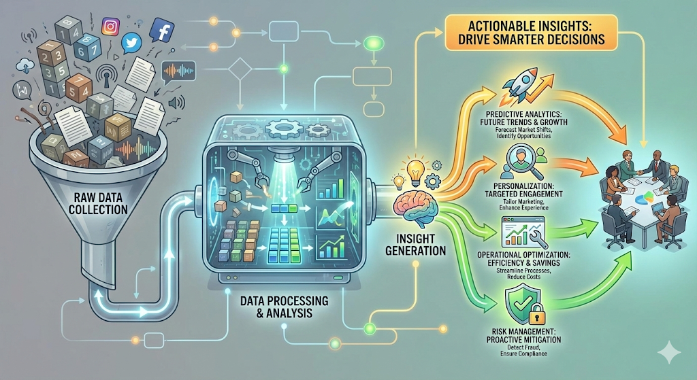

Most MSPs just keep the lights on. As your strategic technology partner, we deliver Business Intelligence (BI) and actionable analytics. Leveraging PowerBI, SQL, and AI-driven insights, we help you see the future of your business.
The Result: You unlock your full potential with a partner dedicated to your operational success.
Make better choices, faster, with a technology partner who understands your business goals. At our company, we give you more than just technical support, we deliver the insights and guidance you need to make confident decisions every step of the way.
We help you turn raw data into actionable information by connecting your systems and introducing dashboards that highlight what matters most to your business. Whether you want to track sales, monitor inventory, or spot trends in customer behavior, we make it easy for you to access and understand the information that drives your success.
Our team works closely with your leadership to identify opportunities for improvement and growth. With clear reporting and regular strategy sessions, we help you plan for the future, avoid costly mistakes, and adapt quickly to market changes. By using modern analytics tools tailored to your needs, we ensure you have the real-time intelligence to stay ahead of the competition.
When decisions are guided by accurate data and proactive technology advice, your business becomes more agile, focused, and resilient. Work with us to unlock smarter decision-making and see how the right information at the right time can power stronger results for your company.